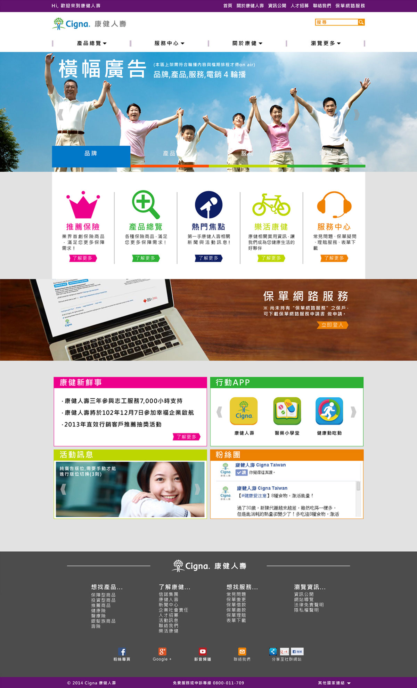
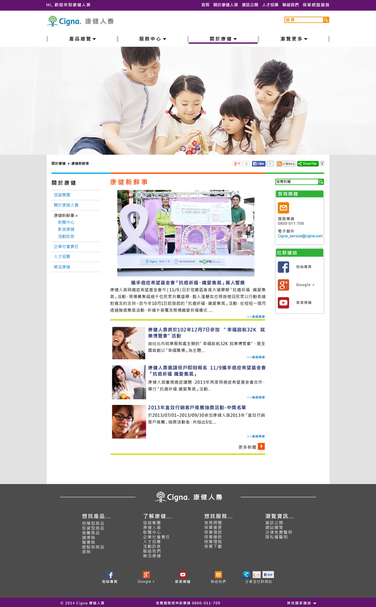

一家保險公司要帶給使用者的感覺不外乎就是讓你擁有一個「彩色人生」，所以此網站主要以灰白為底，再以不同顏色的ICON豐富畫面的色彩，並且以幸福、歡樂和自然的家庭照片來凸顯公司的形象。
The design of this portal tells the atmosphere happy life by utilizing colorful icons,buttons and family pictures.
 Go to website：http://www.cigna.com.tw/